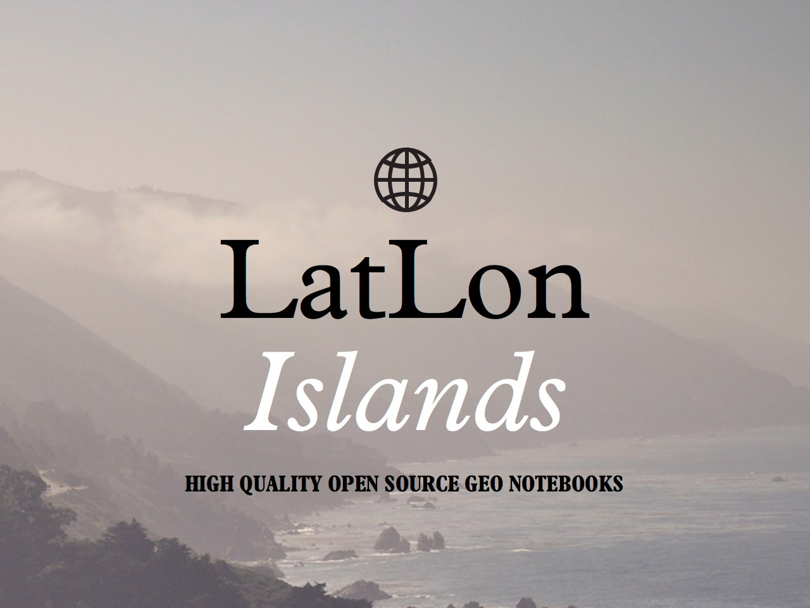

Introducing LatLon NotebooksOn December 2012 we created a letterpress notebook on the infamous Eyjafjallajökull volcano. The response was amazing and people loved it so much that we sold out the limited edition of 1.000 units in just a few weeks. |
|
During 2013 we received emails, questions and requests for new notebooks, displaying other places and geographical features. Wired published an article featuring our map and the notebooks and eventually even selected it as one of the best maps of 2013. We enjoyed the process so much that we've decided to create a series of notebooks. Today we’re launching the first series and we thought it could be interesting for you. |
Our first series: LatLon IslandsA series of high quality notebooks based on Islands around the world with a beautiful letterpress cover built using geographical open data.  As with our first notebook, notebooks covers will be beautiful letterpressed topographic illustrations of the different islands they represent, printed by Reykjavik LetterPress using the best paper and their long experience. Additionally, we'll release all the vector work generated in the notebooks as open source, giving early access to project's backers. We will produce at least 3 different designs for our Islands collection. Each one of these islands have a beautiful topology and a fascinating story we want to share: |
|
But we need your help…We've already spend a massive amount of time working on this project, creating the prototypes and getting all the digital tools in place, but to make it happen we need your help. Today we've launched a kickstarter project to cover the printing cost, materials and shipping needed to get this project off the ground: Check out LatLon Islands on Kickstarter » We're very excited to finally be able to present this project and we're confident that with your help these beautiful notebooks will be soon a reality. Thank you. |